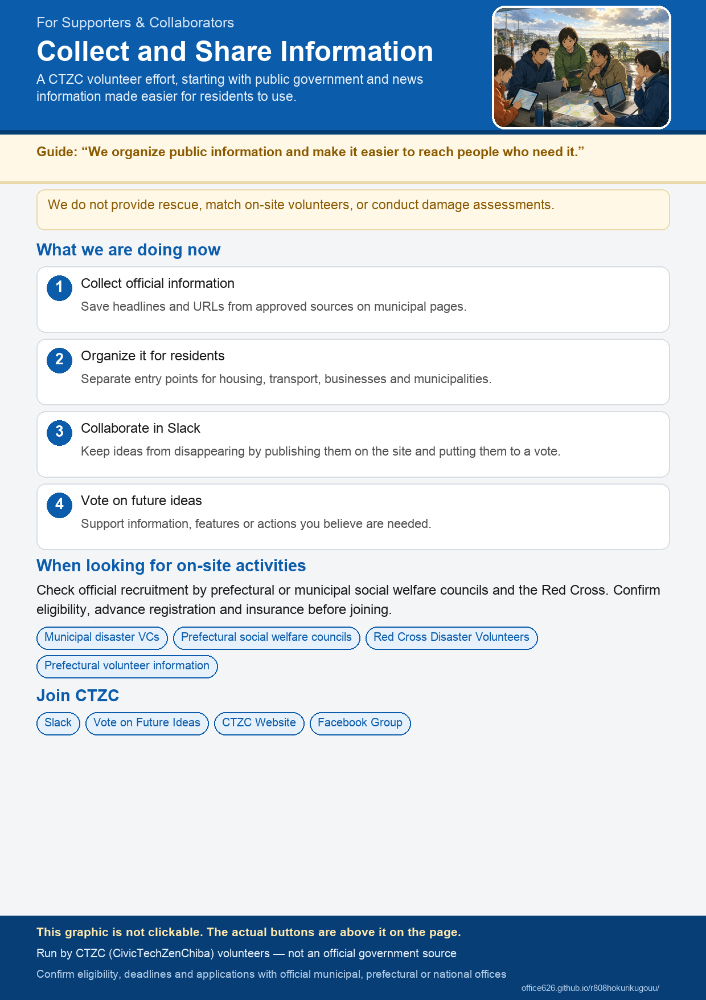

For Supporters and Partners
We are working to support the fastest possible recovery from the heavy rain disaster. We are starting by collecting public information from government agencies and news organizations and making it easier for Ishikawa, Toyama and Fukui residents to find. We will also consider and carry out new forms of support.
Join us on Slack Vote on future ideas
Disaster Volunteer Information in Ishikawa, Toyama and Fukui
Always check the latest official information before traveling to a disaster area. Even when a disaster volunteer center has opened, recruitment may not have started or may be temporarily suspended. Some centers accept only residents of the municipality or prefecture. Check whether advance registration is required, the activity dates, what to bring, and volunteer insurance requirements. Do not arrive without a reservation.
Where to check disaster volunteer centers
Opening status for each municipality is listed as official notices under Search by municipality. The prefecture-level contacts are below.
- Ishikawa Council of Social Welfare Council of social welfare
- Toyama Council of Social Welfare Council of social welfare
- Fukui Council of Social Welfare Council of social welfare
What Would Help After a Disaster? Vote on Ideas
We have listed ideas for information, features, and actions, including how to explain disaster damage certificates, a support program calendar, and how to document damage with photos. Vote for the ideas you believe are needed. The results will help guide future features and new services.
CivicTechZenHokuriku
Initial Tasks
- Check that the URLs on the approved list open correctly
- Report incorrect links between municipalities and official websites
- Add one row of official municipal notices: add “slug, kind (risai/waste/disinfect/water/housing/vc/support/hub), title, URL, status, date checked” to
data/supports.csv(if you do not use git, write the same in a GitHub issue). Reports from the public arrive through the report form on municipality pages. Check the municipality list for those with few dedicated pages so far - Submit requirements as GitHub issues or pull requests
Handling “this is wrong or outdated” reports from readers
Every page has a “Report” link at the bottom, and each municipal official link has a small “Report” next to it. Reports arrive in the “訂正” (corrections) sheet of the operations spreadsheet (Google Form responses); until the form is configured they arrive as GitHub issues. Report contents are not published.
- Check the corrections sheet or the issue and mark it “checking”. If it concerns a municipal official link, set
statustocheckingindata/supports.csv(the site shows a “Being verified” badge) - Verify against official pages only (municipality, prefecture, national government)
- Fix
supports.csv(URL, title, status, date checked) or the page. Mirror any Japanese page change to the English page and runpython scripts/check_bilingual.py - Mark it “resolved” (or “no action” with a reason). Reply briefly if a contact was given
- Review open reports once a week
